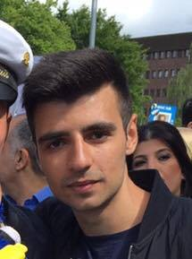

- mariomesarchamoun@hotmail.com
- www.Nackademin.se
- 076-055 33 75
Ang praktikplats på företaget Företag.
Mitt namn är Mario Chamoun och jag är en programutvecklare på Nackademin i Stockholm.
Jag skriver till er för att jag i vår ska ut på tio veckors praktik, och jag läste på er hemsida att ni söker praktikanter till ert företag. Därför anmäler härmed mitt intresse till platsen.
Innan jag började studera programutvecklare har jag bla läst teknik/IT på Rinmangymnasiet, jobbat på flera olika lager jobb bla Dhl och Scanlog, samt jobbat som teknisk support för Bredbandsbolaget.
I och med detta har jag kommit att bli väldigt bra på att både ta egna initiativ samt att arbeta i grupp, och även fått en väldigt hög stresstålighet. Jag är dessutom också både ansvarsfull och självständig. Om jag blev ombedd att beskriva mig själv med tre ord skulle dessa vara glad, positiv och ambitiös.
Hittills under min pågående utbildning har jag bla läst kurserna c# grundkurs, Databasteknik, Frontend, Programmering c# mot asp.net med MVC och mycket mer som jag har skrivit på cv:et.
Utöver detta har jag sedan tidigare dessutom grundläggande kunskaper inom html,css,javascript,php och visual basic (kodad både i dreamviewer,visual studio och vanlig notepad), samt känner mig säker i användandet av Photoshop och Microsoft Office.
Jag skulle bli otroligt glad om jag fick komma till er, och tror att jag skulle lära mig väldigt mycket av det. Vill ni veta mer om mig och vad jag har gjort tidigare så tveka inte att höra av er på infot som finns ovanför.
Vänliga hälsningar
Mario Chamoun